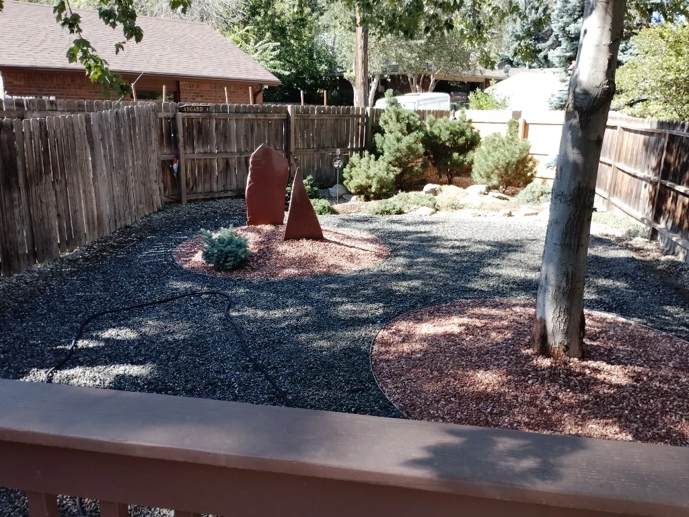

Gravel conversions
Durable gravel beds and clean edges for areas where turf is struggling or maintenance is too high.
We convert tired lawn and difficult spaces into water-wise landscapes using gravel, natural stone, durable edging, and planting choices suited to the property.

Xeriscaping is more than replacing grass with rock. We plan transitions, drainage, access, focal points, and maintenance so the finished yard feels intentional rather than barren.
Durable gravel beds and clean edges for areas where turf is struggling or maintenance is too high.
Flagstone, boulders, monoliths, and retaining elements that create structure and visual interest.
Practical planting zones that complement the hardscape and reduce irrigation demands.
Share your goals and we’ll help you explore a water-wise landscape that fits your property.
Start your project